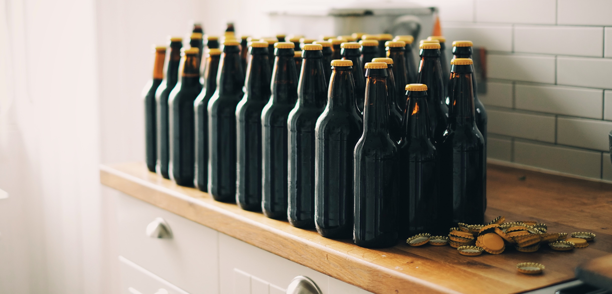

Welcome to ZenBrew
Nose shows some clove and banana bread, with a soft wheat-husk background, nutty yeast, hints of citrus and a brush of floral. In the mouth, the beer is smooth on the palate, light and uplifting. The palate is piqued by crisp carbonation and a watery, lemony edge that segues into a slightly grassy wheat twang, with very soft phenolic image clover-like and thin banana flavors. Pithy floral, nutty yeast, gummy notes. Hops are non-existent, but somewhat expected for the style. Malt characters are weak, lending just a hint of residual sweetness. The finish on this brew is bone dry, with a mouthful of rough and husky tannins and yeast flavors that, unfortunately, linger long past their welcome.
